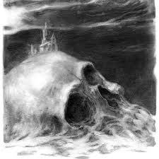
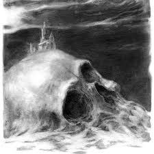

La creencia en la existencia de una vida después de la muerte, así como en las manifestaciones de los espíritus de los muertos, está muy extendida y se remonta al animismo o culto a los ancestros en las culturas prealfabetizadas. Ciertas prácticas religiosas (ritos funerarios, exorcismos y algunas prácticas de espiritismo y magia ritual) están diseñadas específicamente para dar descanso a los espíritus de los muertos. Los fantasmas se describen generalmente como esencias solitarias, parecidas a los humanos, aunque también se han contado historias de ejércitos fantasmales y fantasmas de animales distintos de los humanos.
Se cree que rondan lugares encantados, objetos o personas particulares con los que estuvieron asociados en vida. Según un estudio de 2009 del Pew Research Center, el 18% de los estadounidenses dicen haber visto un fantasma